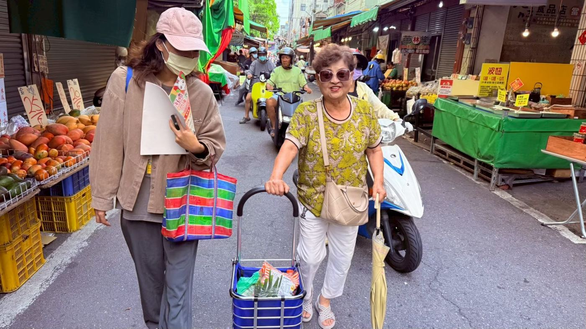
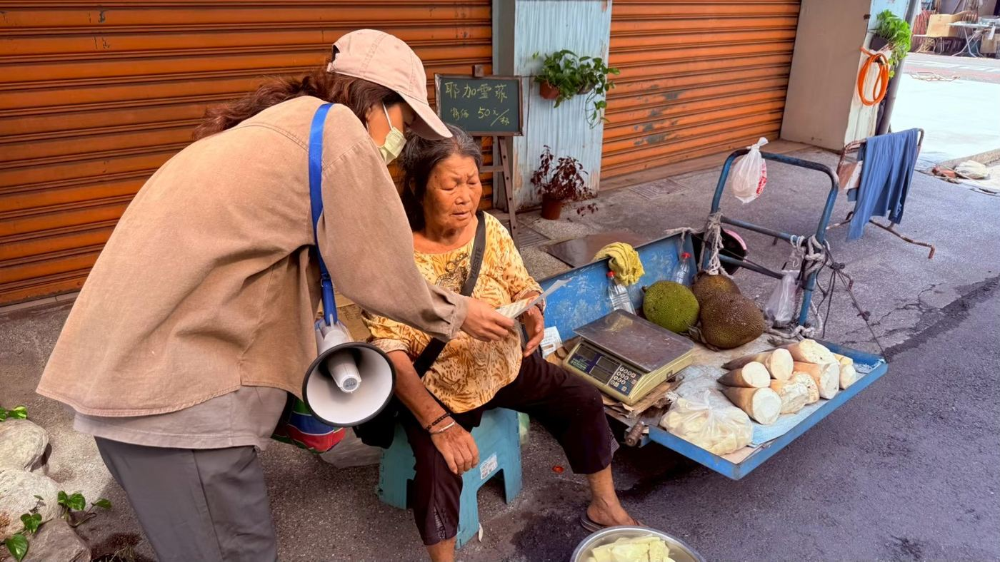
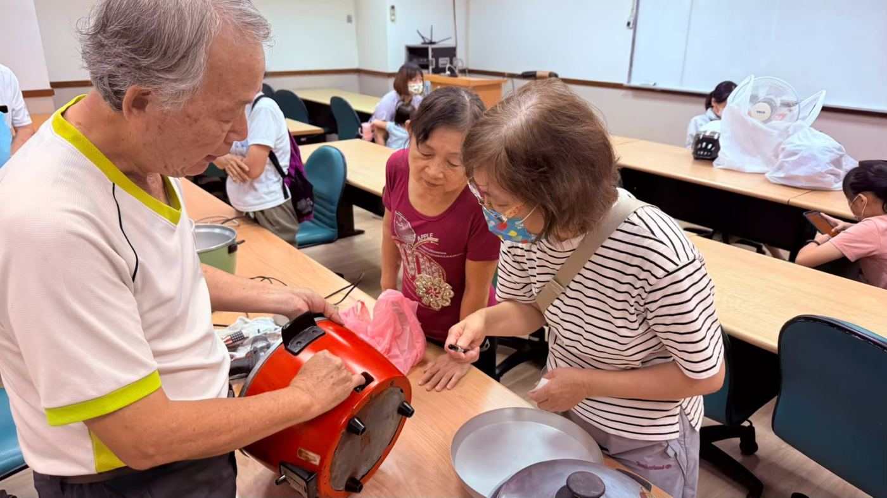
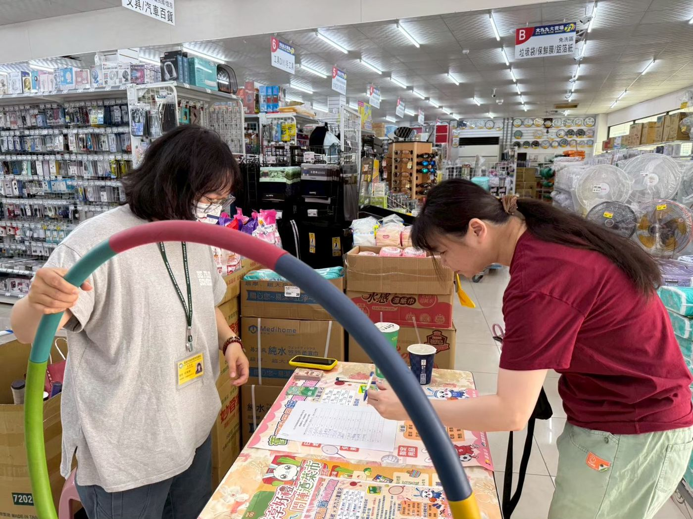
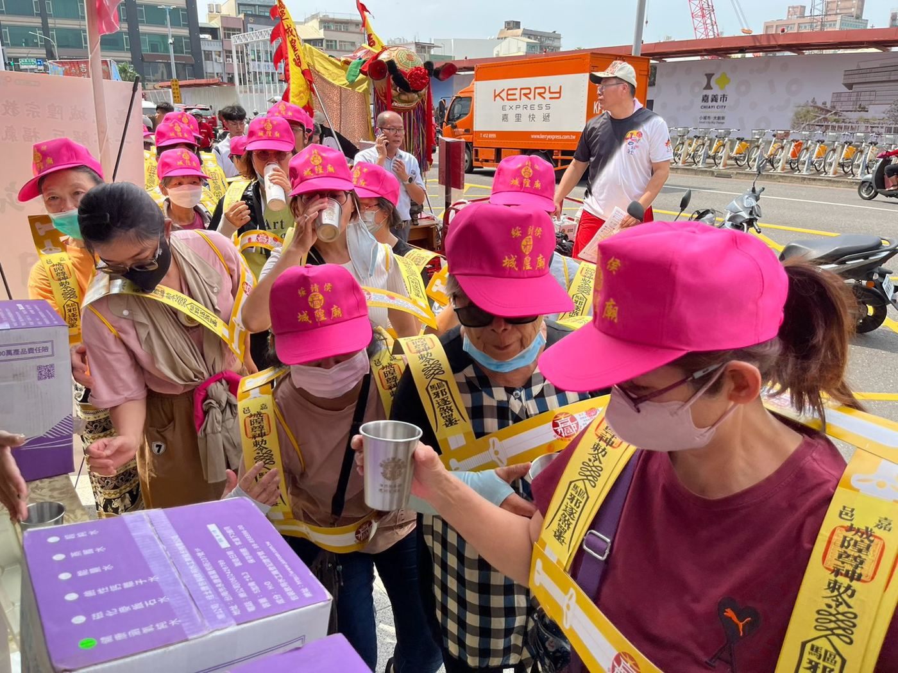
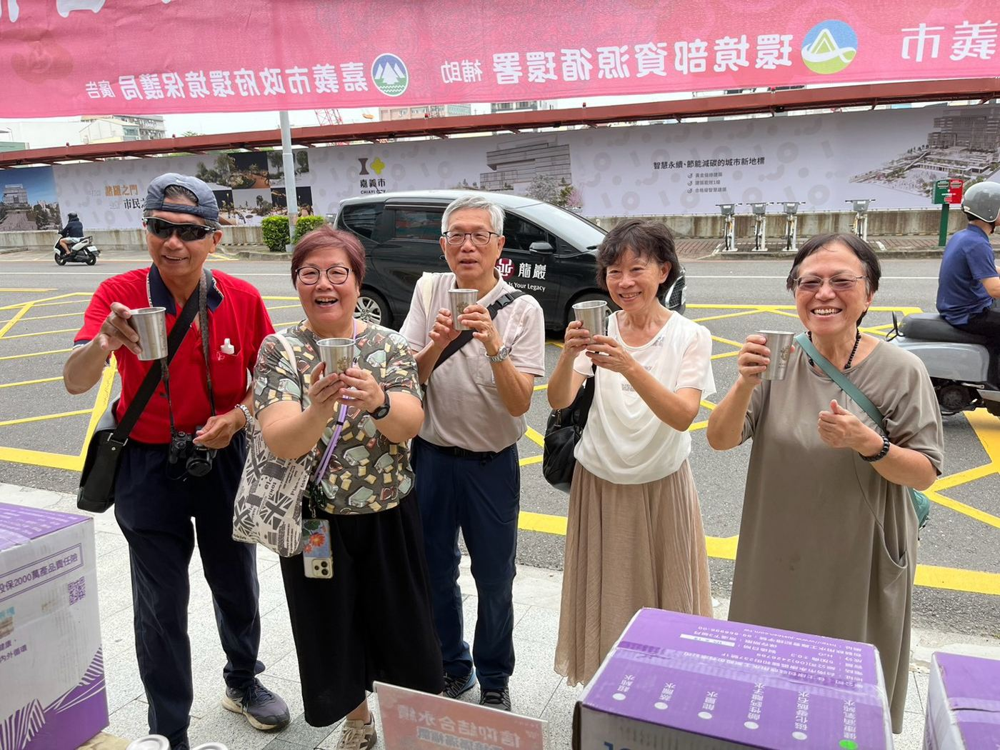
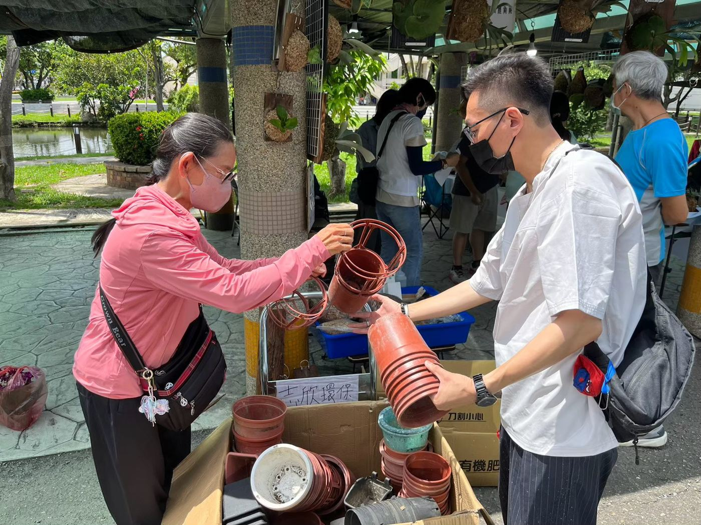
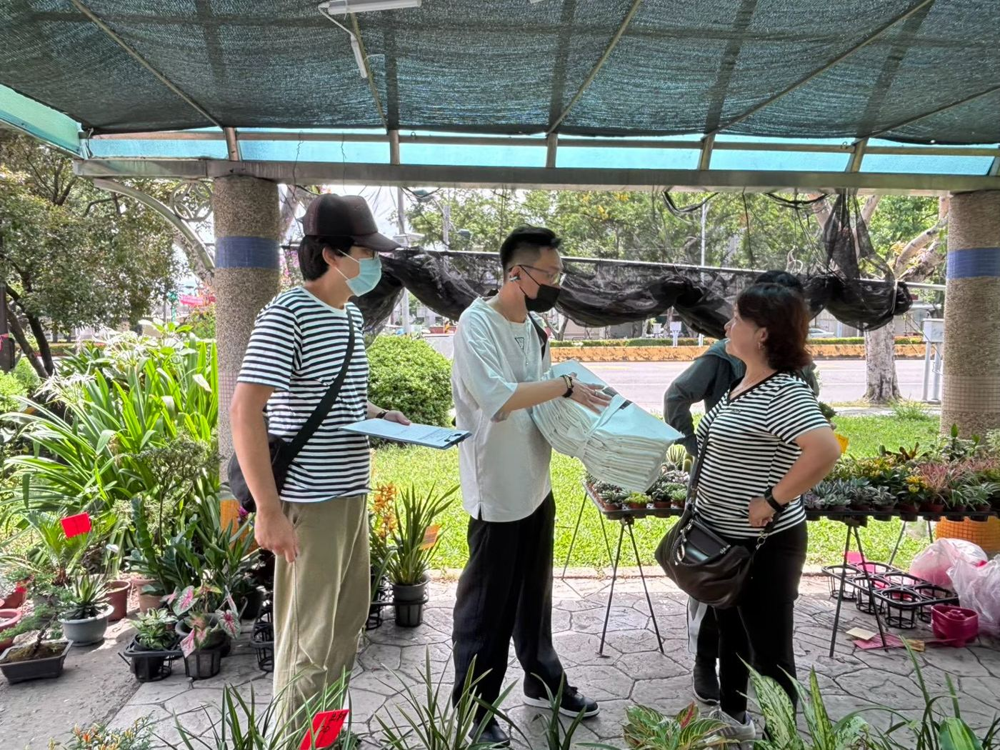
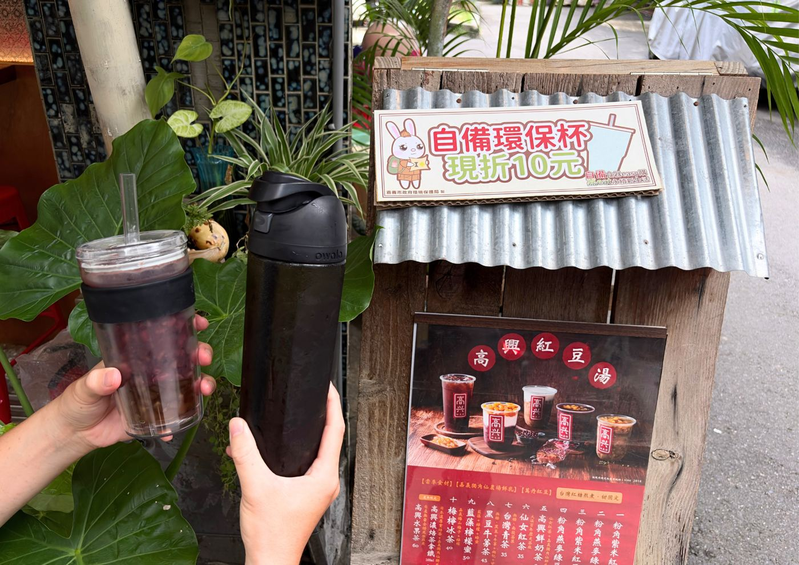
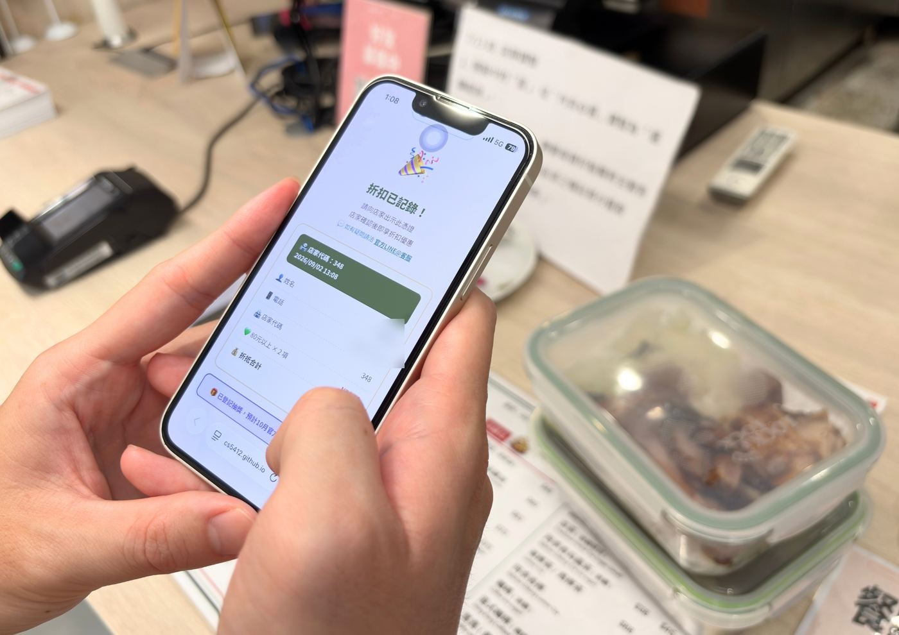

壹｜精進方向之形成依據
116年度改寫原則
每一個場域，都留下一項可自行運作的常態機制。
依局長「不宜照抄115年版」之指示，檢視115年度期中報告第3.5至3.10節，各項工作場域不同，瓶頸卻高度重複。以下五項共通問題，是116年度逐項改寫的依據；經費以補助計畫所列額度為上限，未另行增列。
- 共通問題 1
參與門檻卡在兌換程序
115年度：市場活動須累積5張照片，並於上班時間至環保局臨櫃兌換
點卡片，看116年度怎麼改 ↻ - 共通問題 2
活動單日單點，結束即無延續
115年度：旅宿宣導於飯店大廳設攤；大型活動僅配合1場市集
點卡片，看116年度怎麼改 ↻ - 共通問題 3
成效以推估為主
115年度：市場以每攤每日10人次、每人2袋推估；花市成效表7月後未填列
點卡片，看116年度怎麼改 ↻ - 共通問題 4
設施已設置但使用量偏低
115年度：循環箱至6月底取用218個；不用品據點捐贈13,121件、取用僅1,372件
點卡片，看116年度怎麼改 ↻ - 共通問題 5
合作對象仍屬被動配合
115年度：攤商反映減塑關鍵在消費者端
點卡片，看116年度怎麼改 ↻
貳｜4.1.1 旅宿用品減量宣導
出發前就準備好：旅人分裝站
115年度於旅宿大廳設攤、互動遊戲及打卡抽獎
116年度宣導時點提前至整理行李，場域改設旅客出發與集散節點
旅宿端查核合格率已達100%，還沒改變的是旅客的出門習慣：整理行李時手邊沒有分裝容器，家中又多有用不完的旅宿小瓶備品。
備品回收換分裝
民眾帶來家中囤積的一次用小瓶備品，即可兌換可重複填充的旅行分裝瓶組，並在現場補充站裝填帶走。回收數量即為量化成果。
旅宿業者聯合設攤
邀環保標章及已完成瓶裝水替換的旅宿共同設攤，由業者提供住宿折價或迎賓飲品作為獎勵，計畫不另編獎品費。
旅宿響應支線
旅客自備盥洗用品或環保杯入住合作旅宿，經櫃檯確認或上傳LINE任務即可抽獎，把效益延伸到日常入住。
擴大觸及
車站及林鐵場域廣播、月台與候車區立牌，並製作行前打包短影音於局端社群與在地社群發布。
玩玩看
把家裡用不完的旅宿小瓶交出來
點三瓶備品丟進回收箱，就能換一組可重複填充的分裝瓶。
換到旅行分裝瓶組！回收的3瓶備品，就是活動當場可統計的減量成果。
116年3–4月・阿里山花季
嘉義火車站、阿里山林業鐵路北門驛、檜意森活村等旅客出發與集散節點
116年7–8月・暑假旅遊旺季
配合本市大型觀光活動或旅客集中場域
- 2場次（單日主場次）
- 1,000+每場觸及人次
- 10,000+總觸及人次
- 8 萬元分裝瓶組約700份、文宣
設計理由與參考案例
115年度於3家環保標章旅宿大廳設攤，人流有限，每場1,000人次難以達成，這也是補助計畫把觸及目標由10萬人次修正為1萬人次的原因。
原內容只有分裝體驗與行前檢查表，說服力不足。修正後民眾要先交出家中既有備品才換得到分裝瓶，活動當場就有可統計的回收量；業者聯合設攤讓業者有行銷誘因，車站廣播、立牌與短影音則支撐每場1,000人次目標。
分裝概念延續115年度市場活動「自備空瓶填充」，局端已有執行經驗；補助計畫亦載明可邀旅宿業者一起合作推廣。
待主持人裁示（4）
- 場次認定方式：建議以單日主場次活動2場認定，其餘延伸機制僅計觸及人次。
- 回收之一次用備品處理方式：建議未拆封者轉贈社福單位、已拆封者依材質回收。
- 林鐵、北門驛等場地借用之洽談分工。
- 分裝瓶組現場兌換與支線抽獎之分配比例（建議500份、200份）。
參｜4.2.1 市場減塑
市場無塑日與二手袋直送攤商
115年度累積照片臨櫃兌換、設置二手袋循環箱
116年度攤商直接提供二手袋，並處理生鮮肉品自備容器之痛點
115年度東市場、共和市場、永和市場計185家攤商響應不主動提供塑膠袋，循環箱取用率61%。塑膠袋仍用得掉，卡在兩種情形，116年度分別給解法，並延續3處、新增1處示範市場，執行6個月以上。
二手袋直送攤商
輔導市場管理單位至環境部「袋袋箱傳」平台登錄為需求端，由平台媒合之乾淨二手袋直接配送到攤位，結帳即以二手袋取代新袋；另設整理、分類及轉運暫存站點。
生鮮自備容器示範攤
遴選肉品、魚類及熟食攤設示範攤，張貼「歡迎自備容器盛裝」標示，並統一衛生作法：民眾自行開蓋、攤商不接觸容器內緣。
每月市場無塑日
每月擇定1日，攤商全面不主動給袋，以廣播、沿街舉牌提醒；民眾自備或使用二手袋採買，當場就能在市場服務處或計畫攤位兌換宣導品，不必再到環保局臨櫃。
出口抽樣計數
活動開始前、期中、期末各1次，於主要出口尖峰時段記錄離場民眾使用自備袋、二手袋及新購塑膠袋的比例，並與114年度成果對照。
體驗出口抽樣計數
每看到一位離場民眾，就按他提的袋子
已記錄 0 人
示意操作。實際於各示範市場主要出口尖峰時段抽樣1至2小時，前、中、末各1次，與114年度成果對照。


左右滑動看下一張
- 3+1處示範市場
- 6 個月+執行期間
- +20%減量成果較114年度
- 10 萬元宣導品約800份等
設計理由與參考案例
期中報告顯示循環箱至6月底補充360個、取用218個；攤商反映關鍵在消費者端；評選委員連續二年指出市場成效與目標有落差，只換宣導品品項難以呈現精進。
「袋袋箱傳」平台由企業自行募集並配送至需求端，環保局僅擔任媒合角色，不增加計畫人力；花市二手袋也由本處站點供應，避免重複設置。桃園市以「市場減塑日」辦理，可資參考。
補助計畫新增「較114年增加20%」的量化要求，沿用推估恐難通過審查。環境部在臺北建國假日花市以尖峰動線辨識統計815位離場民眾；本案每處市場每次約2人、1至2小時即可完成。
待主持人裁示（3）
- 第4處示範市場：建議西公有零售市場或北興公有零售市場，須先洽市場管理單位意願。
- 114年度減量成果基線數據須向局端調取。
- 生鮮自備容器示範攤之衛生作業用語，建議先與市場管理單位及衛生主管機關確認。
肆｜4.2.2 推動環保夜市（彌陀夜市）
自備集點兌換夜市消費券
115年度按筆補貼自備折扣
116年度補貼轉為消費券回流攤商，且不增加攤商作業
彌陀夜市是本市尚未輔導的流動型攤商夜市，多無固定水源，內用循環餐具條件有限。重點放在外帶自備容器與不主動提供塑膠袋，全案以不增加攤商負擔為前提。
攤商端
只做三件不費力的事
- 張貼專屬編號環保標章與「自備享優惠」標示，優惠內容由攤商自訂
- 不主動提供塑膠袋，改用計畫配送的二手袋
- 收下民眾的消費券，由夜市自治組織按月一次核銷，攤商不必逐筆登記或蓋章
民眾端
自備集點，換夜市消費券
- 自備容器或購物袋至標章攤商消費，於LINE官方帳號上傳照片累點
- 不便用手機者，由駐點工作人員協助登錄
- 集滿點數兌換消費券，公告總份數、兌完為止
合作誘因
攤商得到的實質效益
- 免費取得二手袋，省下購物袋成本
- 消費券回到攤位，是實際的營業額
- 納入合作店家地圖與LINE查詢
- 協助爭取回收分類設施、循環箱及補水點
115年度「自備食器easy購」文化路夜市周邊64家店家，116年度轉為標章店家持續提供優惠，並納入同一套集點，歷年成果不因補貼結束而中斷。
- 6 個月+執行期間
- 8 萬元全數作為夜市消費券
- 10 萬元本項總經費
設計理由與參考案例
115年度夜市與商圈合計45萬元，至6月底折扣金已發放80萬9,870元；116年度夜市僅10萬元，按筆補貼撐不了6個月。
原規劃紙本集點卡由攤商蓋章，會降低合作意願，已刪除。攤商端只保留張貼標示、不主動給袋、收券三個動作。
改採消費券：集點兌換屬確定回饋，民眾參與意願較高；補貼回流攤商營收，攤商才有主動推廣的動機；每張券都有核銷紀錄，可掌握經費消耗速度，避免再次提前用罄。桃園八德興仁夜市採集點換消費券，臺南復華夜市採集點換環保餐具組。
待主持人裁示（3）
- 彌陀夜市116年度營業日、攤商數及自治組織窗口須實地確認；如不適合，改以其他夜市或商圈辦理。
- 夜市消費券面額、集點門檻及核銷週期。
- 駐點協助登錄之人力排班（建議配合檔期每月2至4個營業日）。
伍｜4.1.2 配合地方大型活動辦理循環容器推廣
活動減廢標準條款、借還機台與旗艦場域
115年度配合1場市集設置借用攤位
116年度由現場設攤改為納入活動籌備規範，並設常設借還機台
大型活動減廢的關鍵，在籌備階段就把減量設計進去。彙整115年度電子表單免押金借用、甲地借乙地還的經驗，研擬「嘉義市活動減廢標準條款」範本，並依下列順序推動：
點圓圈看各階段
第一階段
環保局自辦活動全面適用：國家清潔週、世界環境清潔日等先做到，作為示範。
第二階段
市府其他局處聯合辦理：洽談各局處主辦之市集與大型活動共同採用。
第三階段
民間主辦單位：提供納入招商須知或活動須知。
條款範本內容
攤商使用可重複容器或接受民眾自備；主辦單位設置借還站及補水站；活動後回報容器借用與歸還數量。
循環容器借還機台
於學校、園區、商圈、交通場站或運動場館等人流穩定場域導入至少2台，支持悠遊卡押金制；容器由合格業者清洗消毒，計畫負責場域洽談、宣導與數據彙整。
旗艦示範場域
嘉義市立棒球場
修復後重啟中華職棒賽事，首戰 6,433 名球迷進場，是封閉場域中示範效益最高的一處。洽球團、場館管理單位及場內飲料業者，選定賽事導入循環杯借還服務與補水站，並評估設置借還機台；如無法配合，以市府大型活動或市集替代。
- 1,500+循環容器借用件次
- 95%+歸還率
- 2 台+借還機台
- 1 式減廢標準條款範本
- 10 萬元清洗租賃及文宣
設計理由與參考案例
115年度配合開嘉市集無痕野餐1場，結束即無延續。環境部資源循環署115年9月18日大型活動減廢論壇指出，減廢應於活動開始前納入設計，涵蓋招商規範、容器選擇及供水方式。
原內容僅泛稱提供各局處採用，實務上難以要求。先從本局自辦活動做到，是這份條款站得住腳的前提。
借還機台依補助計畫競爭型「推廣循環杯服務」要求納入，費用由該項下支應；另輔導2場次500人次以上大型活動使用循環容器，並搭配悠遊付「減塑Easy Life」。可引用案例：桃園樂天球場累計17萬個、回收率91%；高雄與台鋼雄鷹於澄清湖球場合作，估計每場減少約1,200個一次性杯。
待主持人裁示（3）
- 116年度職棒賽程及球團、場館管理單位合作意願，內文建議保留替代場域。
- 借還機台之廠商、設置地點與電力、場地權責單位。
- 標準條款完成後，是否由局端行文各局處採用。
陸｜4.5 推動旅宿業減少塑膠瓶裝水永續行動
旅客回報制旅宿減塑排行與公共補水點
115年度補助5家業者、大廳宣導
116年度以民眾端回報統計取代業者提報，據以表揚績優旅宿
114、115年度已有8家旅宿移除客房一次用塑膠瓶裝水，其中115年度受補助5家至6月底減少提供 38,160 罐。116年度業者直接補助改列競爭型，本項改以輔導與誘因設計推動。
場域改善輔導
客房、會議場所及休憩中心三大場域改用玻璃瓶裝水或增設飲水機，並追蹤歷年受補助業者維持情形。
旅客回報減塑排行
旅客自備入住，檢附訂房資訊上傳LINE任務；系統統計各旅宿被回報次數，期末前三名由局端公開表揚。
公共補水點串接
協助旅宿將飲水設備登錄既有奉茶飲水地圖，串聯機關奉茶站及宮廟，LINE提供查詢入口，不另建地圖。
住宿民眾宣導
春季連假與暑假前二檔期，住宿旅客使用飲水設備或出示自備水壺，經櫃檯確認即可抽獎，7月31日前完成。
- 8 家已完成替換之旅宿
- 2 檔期7月31日前完成
- 前三名期末公開表揚
- 3 萬元住宿民眾抽獎
設計理由與參考案例
116年度本項已無業者補助經費，僅餘抽獎3萬元。已完成替換的8家旅宿：新悅花園酒店、兆品酒店、嘉義福容voco酒店、嘉義優遊商旅、嘉宮大旅社、木漏民宿、沐時光民宿、華宮旅社。
原規劃由業者按月提報，考量提報意願與資料品質不穩定，改由民眾上傳：資料來自消費者、業者不必額外作業、統計可追溯，且與「自備有禮」共用同一套上傳審核機制。
原規劃自建補水地圖，因民間已有奉茶App及飲水地圖，改為協助登錄既有平台。補助計畫檢核點為7月31日前完成，115年度排在8月已不符期程。臺南市環保標章旅宿減塑抽獎亦採入住即參與模式。
待主持人裁示（3）
- 旅客回報檢附訂房資訊涉及個人資料蒐集，告知事項與保存期限建議送法制單位審視。
- 表揚方式與獎項（建議獎狀及新聞稿露出，不另編列獎金）。
- 與4.1.1旅宿響應支線之抽獎獎品是否共用。
柒｜4.7.3 推動建立維修示範點提升區域型維修服務量能
先修再買：維修接力站
115年度2處據點、5場次維修服務
116年度維修與不用品據點、二手市集及在地維修店家串成一條去化鏈
基礎已經有了：114年度2場次維修服務76件申請、修復29件，民眾滿意度98%；115年度與有事青年實驗室、興仁社區發展協會設置2處長期據點，首場26件小家電修好22件。
與學校、機關、團體合辦
惜物市集 2場次
與醫院、大專院校、市府大樓、社福團體合辦回收、交換、維修、展售四合一市集；現場排隊、當日送修當日取回，並邀庇護工場設攤展售。
免新增硬體的常態量能
惜物店家聯盟
二手家電行、舊貨行、二手書店本來就有修繕師傅。邀具維修與收受能力的店家掛牌，納入全國不用品藏寶地圖及LINE地圖。
不用品三路分流
修得好、送得出、回收得了
點點看：這件不用品會去哪裡？
聯盟店家修復再販售
具維修價值且有市場需求
不用品據點或社福單位
堪用但無市場價值
依材質資源回收
無法修復
民眾購買二手商品、於據點取用或交換，可參加「自備有禮」惜物再生任務累積點數。
另建立電子化維修登記表，逐案統計修復率與缺席率，彙整二手物品收受數量及市集交換成果；期末提出示範點後續營運規劃與次年度經費需求。


左右滑動看下一張
- 2 處+延續長期據點，評估第3處
- 2 場+惜物市集
- 12 萬元空間活化、設備、耗材、技師費
設計理由與參考案例
本項為補助計畫明列工作，要求延續2處據點、優化量能、評估第3處據點，並推動成效統計、建構維修運作管理模式、彙整二手物品收受數量及交換成果，均已逐項納入。
項目名稱是「提升區域型維修服務量能」，每月1場示範點難稱區域量能。已電話訪查80家二手物品循環概念店：小型家電每月收受291件、再利用率86%；3C產品241件、86%；包包120件、80%；玩具81件、78%。114年度維修技師即為在地家電行老闆。
114年度平日場次缺席率33%、假日14%，116年度以假日辦理為原則；報名前置審核使86%民眾問題獲得解決，當日送修當日取回可避免保管責任，均予延續。
待主持人裁示（6）
- 惜物店家聯盟之邀請名單與合作條件（建議不涉及金錢補助，以標示、地圖曝光及媒合為主，避免圖利疑慮）。
- 捐贈物品轉入營利性質收購店家之處理原則：建議明確區分「民眾自行送店家交易」與「據點捐贈物品之去化」，後者以社福單位及免費取用為優先。
- 第3處據點之候選場域與評估時程。
- 是否增列包包、腳踏車等品項（須先確認技師來源）。
- 技師服務費用標準與材料費補助上限。
- 是否於期末試辦酌收材料費或維修課程。
捌｜4.8.2 結合宗教活動推動源頭減量（競爭型，如獲核定）
平安杯廟際共享
115年度城隍夜巡提供800只平安杯
116年度單場活動用品轉為全市宮廟共用之循環資產
115年度攜手嘉義城隍廟，於城隍夜巡奉茶站首度導入 800 只客製化不鏽鋼平安杯，免押金、免登記借用，活動後移交廟方作為常態循環資產。116年度推動三個層次的擴散：
層次一
廟內常態化
撤除飲水機旁的一次用紙杯，改以平安杯搭配分層收納櫃；城隍聖誕、中元普渡、祈安禮斗等法會設桶裝水及循環杯租借攤位，以紙杯採購量年度變化為指標。
層次二
廟際共享
以城隍廟保管之平安杯為共享庫存，建立廟際借用流程，由計畫協助清點、運送及清洗，一批杯具服務多場宗教活動。
層次三
夜巡擴大與社群串聯
延續2處官方奉茶站，行前邀沿線點心站及熱心信眾以大桶奉茶取代杯水及瓶裝水；活動期間推出自備享優惠與LINE限定任務。
一年四檔，一批平安杯廟廟相傳
農曆正月
嘉義天后宮元宵遊巡
農曆7月
九華山地藏庵法會放水燈
農曆8月
城隍夜巡（平安杯保管單位）
農曆12月
嘉邑大天宮迎春平安祭典繞境


左右滑動看下一張
公私協力參考環境部與大甲鎮瀾宮環保遶境模式，邀在地企業或社團贊助杯具、清洗服務或志工人力，並於杯具或奉茶站標示贊助單位，降低廟方長期維運成本。
- 30 萬元依環境部核定情形辦理
設計理由與參考案例
115年度平安杯成果良好，副市長及局長均出席，媒體露出充分；116年度如再製杯重辦夜巡會被視為重複辦理。平安杯為304不鏽鋼、耐用度高，一年只用一場未能發揮效益。
期中報告已於6月完成5間宮廟訪查：地藏庵放水燈約200至300人、大天宮迎春繞境約300人、天后宮元宵遊巡未達100人，規模適合借用數十至二百只，且與城隍夜巡檔期錯開，調度可行。
待主持人裁示（2）
- 廟際借用之保管責任、清洗費用歸屬及損耗補充方式，須與城隍廟先行議定。
- 是否納入中元普渡贊普供品包裝減量宣導（涉及信眾習俗，建議先徵詢廟方意見）。
玖｜4.8.5 花市／市集型場域減塑示範專案（競爭型，如獲核定）
植感生活・不塑買花
115年度每月辦理盆器回收兌換、兩用袋試辦
116年度攤商日常常態收盆與提供二手袋
至115年6月，假日花市回收塑膠盆器
790 個
全數回流攤商育苗再利用，不是破碎再製。本市115年6月即推動盆器回收，早於環境部115年7月在臺北建國假日花市的同類活動。
三種不塑買花方式
自備購物袋可享攤商優惠（折扣、贈苗或肥料試用包）；二手袋由市場減塑的整理轉運站點配送，並設循環箱；嘉義植感袋以115年度兩用袋為基礎結合木都意象，提回後可續作植栽容器。
回盆折抵：攤商常態收盆
攤商營業時間常態受理乾淨盆器，依數量提供折抵或加購優惠，收回的盆直接育苗、省下採購成本。計畫只在開辦初期提供宣導物件，每季辦理1次加碼活動。
成效量測
推動前、第3個月及第6個月於花市出口尖峰時段抽樣，統計自備袋、二手袋、植感袋及新購塑膠袋比例；逐月記錄盆器回收量及植感袋使用量。


左右滑動看下一張
- 6 個月+推動期程
- 20%+塑膠袋減量成效
設計理由與參考案例
115年度模式每月1場、每場2小時，宣導品兌完即結束，盆器循環完全繫於計畫人員出勤。攤商本身即有育苗用盆需求，只要給民眾帶回的誘因，就能變成日常運作。
二手袋整理與轉運站點設於市場減塑項下，花市共用同一套後勤，避免重複投入。名稱改為本市自有的「植感生活・不塑買花」，延續「嘉義無塑植感綠生活」識別。
待主持人裁示（2）
- 是否提送花市競爭型申請（補助計畫執行方法列有本項，惟經費明細未編列）；如未提送，本節可縮為市場減塑之延伸場域。
- 植感袋採購數量與發放對象（建議由115年5家試辦攤商擴大至10攤）。
拾｜4.9 創新或亮點作為（服務建議書第三章3.2節）
自備有禮：源頭減量行為獎勵系統
115年度線上闖關遊戲搭配抽獎
116年度串接既有LINE官方帳號與遊戲，各工項參與紀錄跨場域累積
115年度「自備食器easy購」合作店家達 147 家、累計服務逾10萬人次，民眾自備意願充足。但兩個限制也很清楚：按筆補貼讓參與愈多、經費愈快用罄，活動因此提前結束；各活動獨立表單、獨立兌換，市場、夜市、影城的紀錄無法互相累積。
一個帳號、一條動線、一本點數簿。
不開發App、不另建平台
以環保局現有LINE官方帳號（好友15,567人）為單一入口，串接115年度已建置的闖關遊戲、LIFF身分綁定頁面（已實機驗證可取得使用者識別碼）及合作店家網絡，回應評選委員「線上平台應整合既有資源」的意見。
- 入口與通知LINE官方帳號圖文選單、關鍵字自動回應、審核結果通知
- 教育線上闖關遊戲（四關）改為新手任務，通關得點並導向實體行動
- 任務LIFF上傳頁面自動取得使用者識別碼，上傳照片、任務類型及件數
- 資料與審核Google試算表＋Apps Script審核後台、點數帳本、兌換登記，每日自動備份
- 兌換電子優惠券及宣導品即時扣點、產生兌換碼、記錄核發時點
任務設計（點數規則暫定）
新手任務
完成線上闖關遊戲全部關卡
5點，限1次中央串接任務
完成環境部「減塑Easy Life」登錄並上傳完成畫面
5點，限1次任務線一：自備探險嘉
自備環保杯、餐盒或購物袋至標章店家、示範市場、夜市消費
每件1點，單次上限10件，每週至多10次任務線二：旅遊自備小樣
自備盥洗用品或環保杯入住本市旅宿，檢附訂房資訊
每次3點，每月至多2次任務線三：惜物再生
送件至惜物店家聯盟或不用品據點、購買二手商品、送修、於據點取用或交換
每次2點，每週至多3次加碼任務
市場無塑日、夜市指定營業日、宗教活動、大型活動借用循環容器等
限定期間點數加倍或加贈
試玩：一週的自備行為能累積多少點？
點下面的行為，看點數怎麼累積，以及這筆紀錄會成為哪個工作項目的成效佐證。
示意體驗：點數依暫定規則；滿 20 點為示意兌換門檻，實際級距待第一階段實測後訂定。
同時是各工項的成效佐證
| 工作項目 | 系統提供的佐證 |
|---|---|
| 市場、夜市減塑 | 自備購物袋與容器上傳件數，可辨識場域與店家 |
| 一次用產品減量宣傳 | 旅遊自備小樣任務人次，作為觸及人次之可稽核來源 |
| 旅宿減少瓶裝水 | 各旅宿被回報次數，作為期末表揚依據 |
| 維修及不用品再使用 | 惜物再生任務即為交換、取用、二手購買及送修之量測工具 |
| 活動循環容器 | 大型活動借用循環容器加碼任務 |
| 宗教活動 | 宗教場域限定任務及自備享優惠參與統計 |
三道控管
三層驗證
每筆上傳須有：合作店家專屬編號標章、當日消費或訂房證明、自備物入鏡。退件原因採預設選項並自動推播；必要時首次全審、其後隨機抽查。
份數控管
店家自備優惠由店家自主提供；計畫層兌換品由各工項既有宣導品預算支應，原本現場發放的宣導品改為憑行為兌換。各品項設總份數上限，即時扣除並於餘量偏低時預警。
推播成本
點數查詢等高頻功能一律由民眾主動點選後回覆，不計費；退件即時推播、通過每週彙總一則。以1,000名活躍參與者估算，月推播約4,000則。
分階段推動
116年1–2月・驗證
開放新手任務及任務線一，限商圈、夜市及市場，確認退件率、說明是否易懂及店家配合意願。
116年3–10月・擴充
開放全部任務線，納入旅宿、宗教、大型活動、不用品據點、惜物店家聯盟及維修示範點。
116年11月・常態化
彙整成果，提出後續年度低成本延續方案。
經費 20 萬元
| 項目 | 金額（元） |
|---|---|
| LINE官方帳號訂閱及推播（高用量方案11個月） | 48,000 |
| 認證標章設計與印製 | 30,000 |
| 圖文選單與宣傳素材 | 40,000 |
| 遊戲擴充維運 | 30,000 |
| 上線宣傳及里程碑露出 | 12,000 |
| 網域及雲端儲存 | 2,000 |
| 加碼獎勵電子券 | 38,000 |
| 合計 | 200,000 |
系統由本計畫人員自行開發，不另編委外費用。
如委外辦理，依政府資訊服務採購經費估算原則，概估約需 5.3 人月、新臺幣 65 萬至 105 萬元。


左右滑動看下一張
預期效益
- 20,000+LINE好友數（基線15,567）
- 3,000+完成至少1次任務之參與者
- 30,000+審核通過減量件數
- 2,000+惜物再生任務件數
- 150+認證標章店家（基線147）
- 500+減塑Easy Life登錄人數
質化效益：環保局首次擁有跨活動、跨場域、可追蹤至個別店家與個別行為的減量資料，115年度投入的店家網絡、好友與遊戲資產，不再隨單一活動結束而流失。
設計理由與參考案例
115年度評選委員曾指出線上遊戲應整合既有平台、應與線下行動連結、預期效益應量化；本案以既有官方帳號為唯一入口、遊戲直接導向實體行為、效益全數以系統數據呈現，三項意見均有回應。
任務線三依組長構想擴充為四種行為：收購店家內既有師傅可當場判斷能否修復再流通；以點數鼓勵購買二手，直接處理據點去化問題；維修與不用品再使用目前沒有其他量測工具，本任務線即為成效統計來源。
擴大參與：各項宣導活動一律導入同一官方帳號與任務，不再逐活動另設表單及QR Code；147家店家優先轉為標章店家；上線初期全體好友公告1次，其後分眾推播；115年度easy購參與者完成首次上傳加贈點數；以全市累計減量看板取代個人排名；評估將帳號名稱改為長期名稱並申請認證。
待主持人裁示（5）
- 系統名稱及官方帳號名稱（LINE帳號通過認證後名稱即不得修改，須於送件前定案）。
- 各任務線點數規則與兌換級距（建議第一階段實測後調整）。
- 二手購買憑證之認定範圍，是否限惜物店家聯盟及不用品據點。
- 上傳照片、訂房資訊及消費證明涉個資蒐集，告知事項與保存期限建議送法制單位審視。
- 審核人力配置與分層審核啟動門檻。
經費總覽
以補助計畫所列額度為上限
分裝瓶組約700份、文宣
宣導品約800份、循環箱與整理站點、文宣
夜市消費券8萬元、循環箱、文宣
容器清洗及租賃、文宣；借還機台由競爭型項下支應
住宿民眾抽獎
空間活化、設備、耗材、技師服務費
LINE推播、標章、素材、遊戲擴充、加碼電子券
依環境部核定情形辦理
經費明細未編列，是否提送待裁示
提請計畫主持人確認
待裁示事項總覽
以下彙整各項工作文末的待裁示事項，點項目名稱可回到該段查看設計理由。
勾選僅存在這支手機或這台電腦上，方便閱讀時自行標記，不會傳給他人。